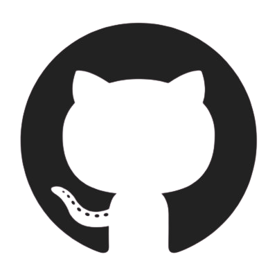
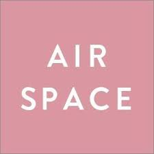
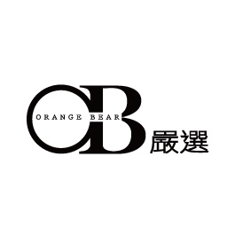

我是一個喜歡在工作中獲取成就感的人，但老實說我目前的工作十分平穩，相對的也比較沒有繼續成長或學習的空間。
Rosie Lo
- 1995.11.07
- /
- 0965167511
- /
- rose1020830@gmail.com
- AppWorks School Batch #20
- 世新大學新聞系
- /
- 實踐大學服裝設計學院 Fashion merchandising 學程結業
Motivations
直到今年接手公司內部官網&系統轉換的工作，代表部門和SAP.EC.尚裕.Salesforce等四大系統商對接、討論需求的可行性，為了能更有效率的溝通，我利用下班時間開始研究軟體開發，抓著公司的IT同事、廠商的工程師們討論跟學習。
我喜歡和大家一起發現問題、解決問題的過程，每當解決了其中的BUG就會覺得很有成就感，也逐漸發現原來自己對軟體開發是很有興趣的！
Motivations
再加上同樣也是從不同領域轉職的姊姊，獲得了到德國工作的機會，讓原本也有出國工作夢的我非常羨慕!反觀自己現在的工作在國外是完全沒有競爭力跟生存條件的。
軟體工程師相較於科技業其他的職位(PM.業務等等)更具有調配性(一台電腦即可上工，不受時間地點的阻礙)
和姐姐還有身邊的工程師同事討論後，認為如果有出國的打算，海外對於軟體工程師的技術移民也相對容易、近年來需求也持續在增加，走前端發展比較廣，因此毅然決然決定踏進軟體工程師的世界！
Future
27
- 階段目標：完成AppWork School階段課程後順利就業，將所學應用在工作上並同時累積實戰經驗，也持續學習不同工具，讓自己對框架的掌握度越來越高，到最後可獨立作業。此外積極參與軟工讀書會、社群等等，希望可以和同儕、前輩們一同學習，獲取各方資源以求進步。
- 應備能力：ReactJS/JS/TS
28
- 階段目標：對我而言應該是打好基礎、累積實力的一年，工作一段時間後對於網站的架構應該已經相對熟悉，接下來希望自己能逐漸朝全端工程師邁進。透過學習後端語言能在現有的前端基礎上，更清楚整個網頁背後的資料邏輯。
- 應備能力：Python/ Algorithm/ Data Structure
29
- 階段目標：依循姊姊的經驗，累積一定程度的技術能力後可開始投遞國外的工作機會，這階段必須讓自己除了技術能力外也能妥善安排並決定專案的走向及作法(國外的工作機會很多都是新創或小型公司，可能需要一人作業)，當然同時也不斷的學習全端所需技能。
- Senior Engineer&持續增進英文能力(多益900分、聽說無障礙)
30
- 階段目標：在國外(目前期望國家是荷蘭)取得工作居留證，適應國外的工作環境，學習與不同國籍或跨國的同事進行專案。
- 應備能力：若有興趣永居荷蘭，開始學習荷語
Experience

AIRSPACE 新地有限公司
品牌採購主任 2020/7-仍在職
- 分析品牌整體進銷制定年度OTB，並依照實際銷售狀況隨時調整，控管大貨交期及品質，任職期間品牌遲交率由35%降為10%
- 蒐集國內外流行趨勢，根據銷售導向精準鎖定品牌定位，在線上線下同時大量開發服裝樣板
MOMA其基有限公司
女裝採購專員 2019/7-2020/6
- 鎖定品牌客群定位，每月兩次至大陸廣州、虎門等地進行樣衣採買，並調整版型、於當地工廠下單。監控後續商品品質、出貨狀況等跟單事宜。
- 每月協助商品拍攝，至現場調整商品穿著狀態及目錄照表達品牌形象
- OTB及產品上市週期的控管

OB嚴選旗下藝人曾莞婷服飾品牌I.REAL
社群行銷專員、直播主 2018/7-2019/8
- 透過確立品牌定位、每週以主題式貼⽂溝通、增加服飾特性描述，在我任職期間，品牌在單⼀社群的月收入從60萬晉升到現在的破百萬
- 規劃『情人節撩粉影片』成功提升品牌知名度，達到2倍網站流量，更吸引三立新聞轉發，成功把握節慶提升品牌形象與產品曝光。